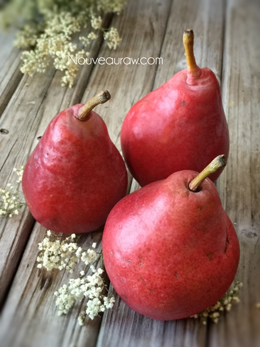
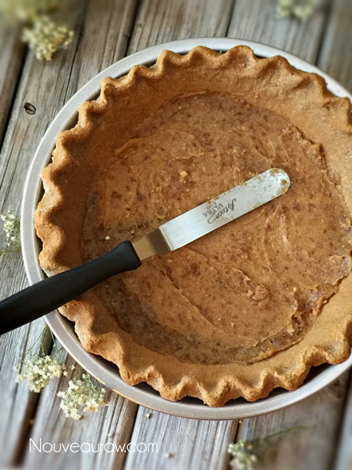
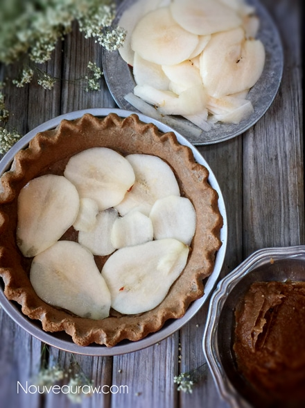
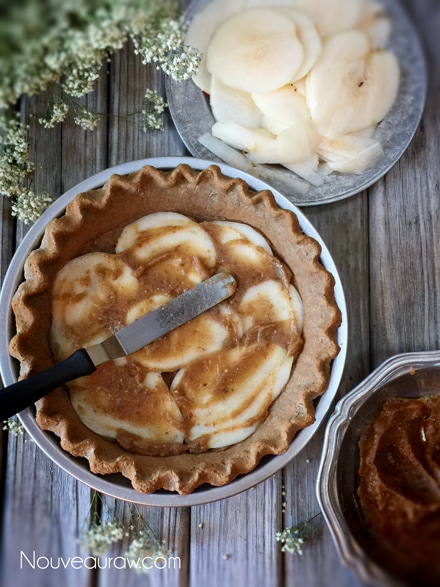
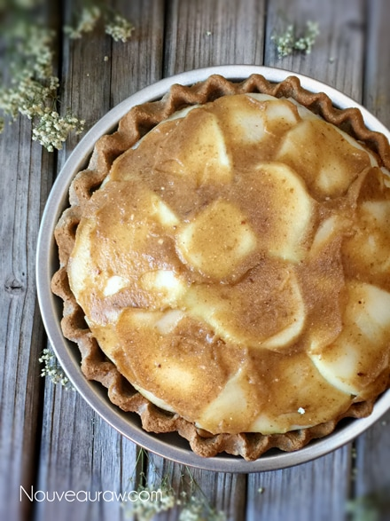
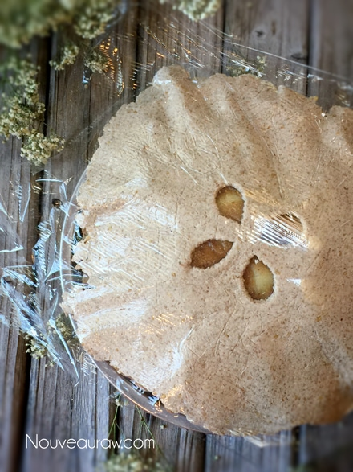
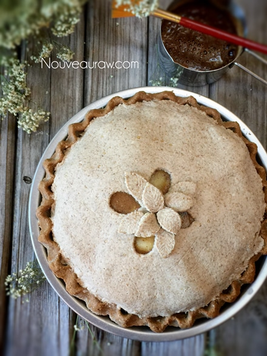
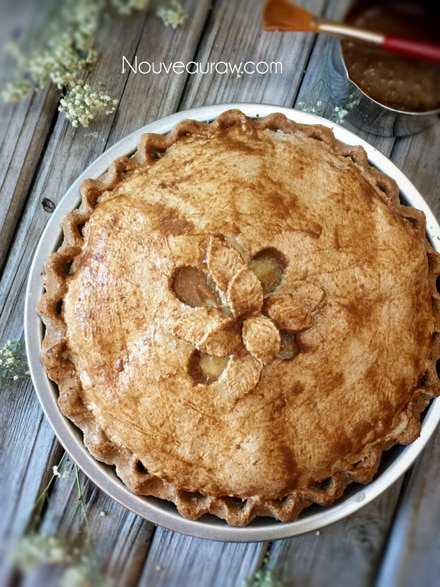
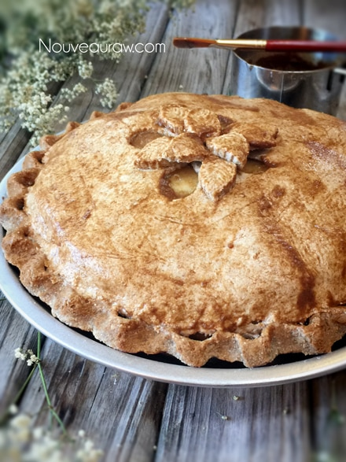
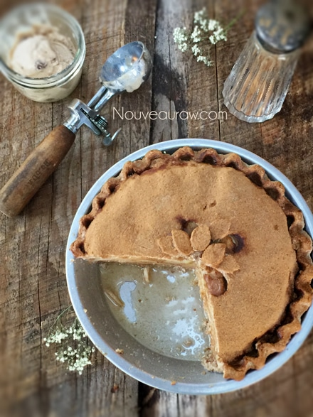

Cinnamon Caramel Pear Pie

~ raw, vegan, gluten-free, nut-free ~
I love being able to convert cooked recipes to raw. Not only in flavor, but in texture and visually. I am going to go out on a limb here and say that I really nailed this one. :)
The true challenge comes when stripping away the cooking elements, the gluten, the eggs, the dairy, the starches, the refined sugars… it forces …, it encourages a person to get creative. The sad part is when most foods are cooked, not only are much of the nutrients destroyed but so are some of the pure, delicate flavors.
There have been many times when I look at food in sort of a sacred way… almost afraid to adulterate its purity. That was the case with these pears. If I wasn’t going to eat them whole as they came off the tree, then I needed to come up with a way that would truly honor their beauty and sweetness. That is where my inspiration came from for this pie. The pears were perfectly ripe, sweet, juicy… to the point of literally melting in your mouth.
To compliment the pears, I wanted to create the ultimate pie crust. I didn’t want to create the standard raw nut & date crust. Pulling from my memory banks, back in the day when I ate cooked pies… I remember the crust being light, flavorful but never competing with the filling.
I loved the fluted rim of the pie crust as it would fall to the plate once the pie was served. The weight of it was just too much to hold in place. It would be a darker brown from being slightly overcooked, leaving it crunchy and extra sweet from the pie filling bubbling out over it. Ummm.
I was able to recreate all that with just a few tricks from up my sleeve. Below I am sharing all the techniques that I used to create this pie. I hope it inspires you to give it a try. If you do, please leave a comment below. I always love hearing from you.
Crust:
Pear filling:
- 5 (1405 g) ripe pears, peeled
- 1 1/2 cup date paste
- 1/2 cup water
- 1 Tbsp lemon juice
- 1 1/2 tsp ground Ceylon cinnamon
Preparation:
- Prepare the crust as indicated in the link above.
- You will want a top and bottom crust for this pie.
- While the crust is dehydrating, place the countertop dough in the fridge, well sealed in plastic.
- Wash and peel the pears.
- Using a mandolin, slice the pears to a 1.5 mm thickness. Set aside.
- In the blender combine the date paste, water, lemon juice and cinnamon. Blend until well mixed. Pour into a small bowl.
- Now the layering process begins. Spread a thin layer of date paste on the base of the crust.
- Place a single layer of pears in the pan, making sure to cover the whole base.
- Spread a thin layer of date paste over the pears.
- Repeat this process until all the pears are used up.
- There should be enough to create a dome effect in the center.
- End the layering process with one last layer of date paste.

Prepare the top crust:
- Lay a piece of plastic wrap on the countertop, placing the other half of crust from the fridge in the center, placing the second piece of plastic wrap on top of that.
- Roll it out nice and thin, less than 1/4″ thick. It needs to be thick enough that it won’t tear.
- Optional: use a small cookie cutter to make shapes in the crust top. I used a leaf cookie cutter. With some leftover dough, I made a few extra leaves and arranged them on the crust after it was constructed. See photos below.
- Remove the top plastic piece from the crust. Lift the bottom piece of plastic up by the bottom two corners. Drape the crust over the pie and gently position it into place.
- Once in place, remove the plastic. Trim away any excess dough, leaving a little extra so you can tuck down into the edge of the outer crust.
- For the finishing touch, paint a thin coating of cinnamon over the top.
- Mix 2 Tbsp of date paste, 2 Tbsp water and 1 tsp of cinnamon in a small bowl. With a paint brush, apply a thin coating over the crust. This will give the pie that cooked appearance.
Dehydrating:
- Slide the pie into the dehydrator at 145 degrees for 1 hour, then reduce to 115 degrees (F) for 3-5 hours.
- Check the pie occasionally. The pears will start to release some liquid. Gently tip the edge of the pie pan over the sink and drain it away.
- This dry time will also soften the pairs giving them that cooked texture.
- Enjoy warm!
- Store leftovers in the fridge for 3-4 days.
Culinary Explanations:
- Why do I start the dehydrator at 145 degrees (F)? Click (here) to learn the reason behind this.
- When working with fresh ingredients, it is important to taste test as you build a recipe. Learn why (here).
- Don’t own a dehydrator? Learn how to use your oven (here). I do however truly believe that it is a worthwhile investment. Click (here) to learn what I use.
Start with a crust.

Layer 1 – date paste.

Layer 2 – a single layer of pears.

Repeat process until the pears are gone.

The last layer is date paste.

Drape the crust over the top and remove the plastic.

Trim the edges of the top crust.

Paint the cinnamon date wash over the pie and dehydrate.


Done dehydrating and ready to be enjoyed.

© AmieSue.com